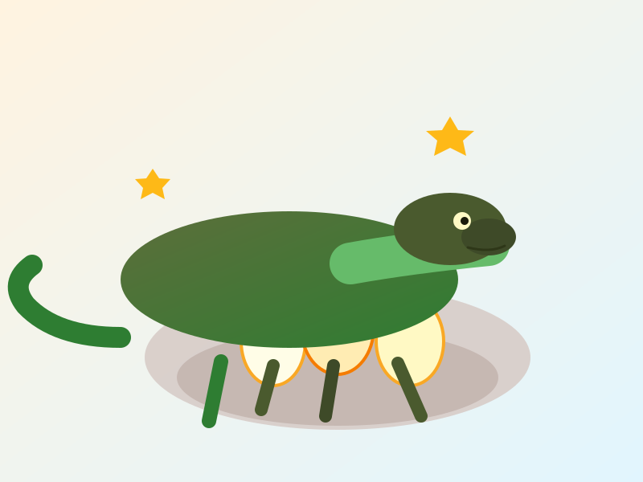

Start as Eggs
Komodo dragons grow from eggs.
The biggest lizard in the whole world!
A fun place to learn — perfect for school projects!Short facts about how baby dragons begin.

Komodo dragons grow from eggs.

Babies are small, so they stay safe and grow.

As they grow, they explore new places and skills.

Babies use simple signals so others know where they are.